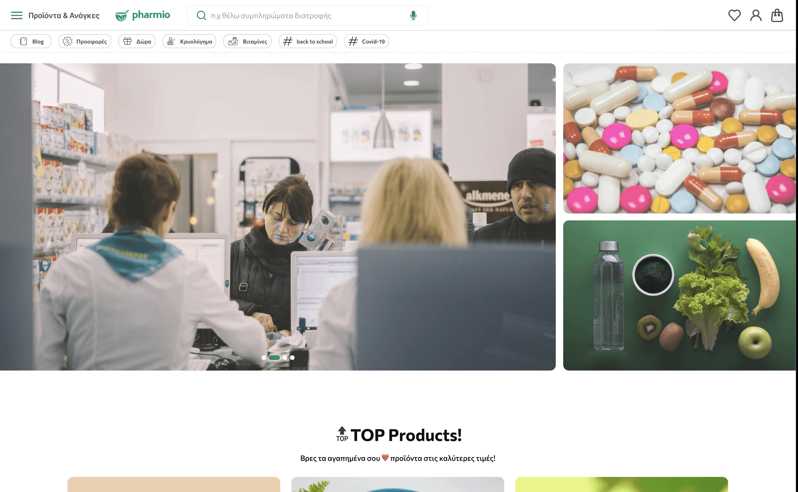
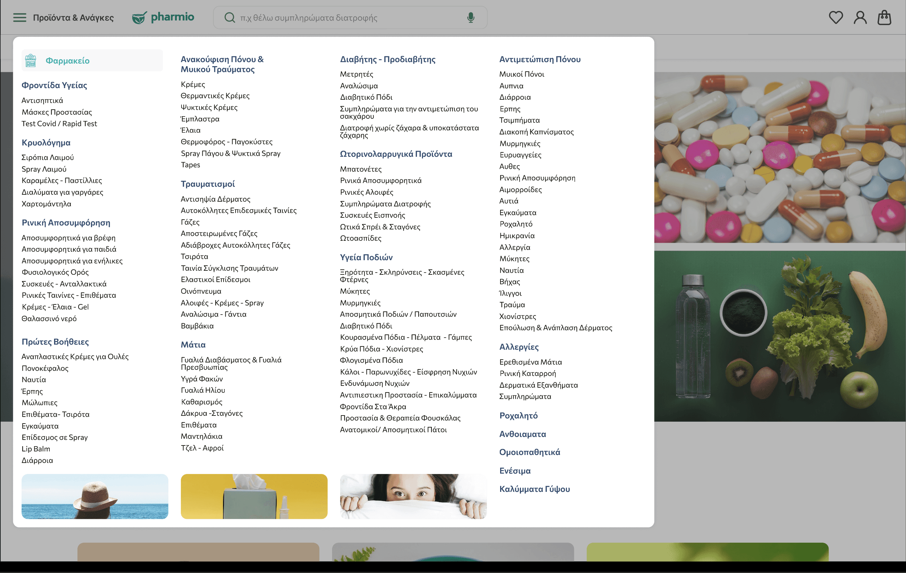
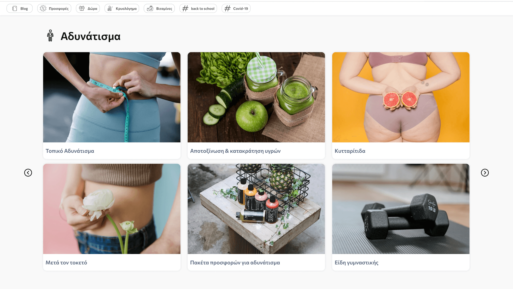

An online pharmacy stuck in the past — rebuilt for the way people actually shop for health.
Pharmio is a full redesign of an online pharmacy platform. The existing store had critical usability gaps: confusing navigation, inaccessible product pages, and a checkout process that drove users away before converting.
Working as the lead UX designer at Quintessential, I took the project from user research through to final handoff — with a particular focus on accessibility compliance and measurable conversion improvements.


Users couldn't find what they needed — and when they did, checkout friction killed the sale.
User surveys and a competitive audit revealed three core problems:
Confusing menu structure
Product categories were inconsistent and overlapping. Users couldn't predict where to find a product, leading to high exit rates from category pages.
Poor accessibility
Low contrast ratios, missing alt text, and no keyboard navigation made the site unusable for a significant portion of the pharmacy's target demographic.
Checkout abandonment
The multi-step checkout had no progress indicator, required account creation upfront, and had confusing error states — all contributing to drop-off.
Research
User surveys, accessibility audit, competitive analysis of leading pharmacy platforms.
Design
Wireframes to high-fidelity in Figma. WCAG 2.1 AA compliance baked in from the start.
Prototype
Interactive prototypes for 3 key flows: search, product page, and checkout.
Test & Ship
Usability testing with 8 participants, iterated on findings, collaborated with devs for handoff.

Advanced search with contextual filters
Filters by category, brand, health concern, and price range — reducing search-to-product time significantly.
Restructured information architecture
Simplified menu with 6 clear top-level categories based on card sorting sessions with real users.
WCAG 2.1 AA accessible UI
Full contrast compliance, keyboard navigation, screen reader support, and ARIA labels throughout.
Streamlined guest checkout
3-step checkout with progress indicator, guest option, and inline form validation to reduce abandonment.
The redesign significantly improved user engagement metrics, with higher interaction rates and longer browsing sessions. Improved navigation and streamlined checkout drove stronger conversion, while the accessibility improvements opened the platform to a wider audience.